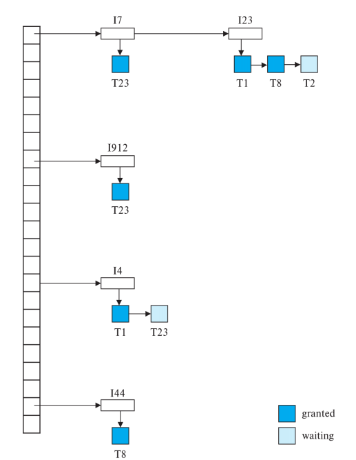
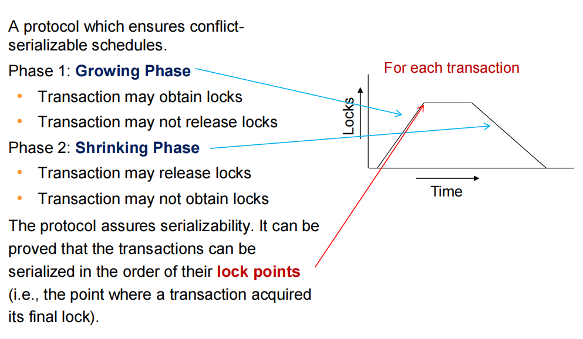
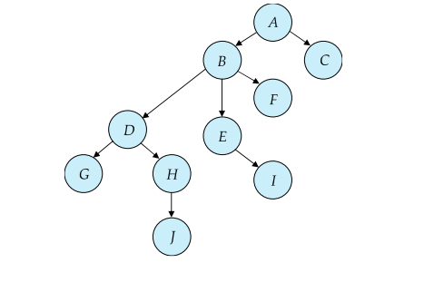
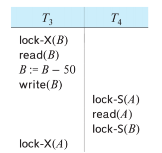
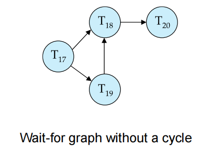
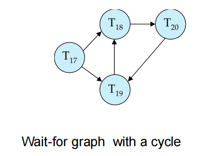
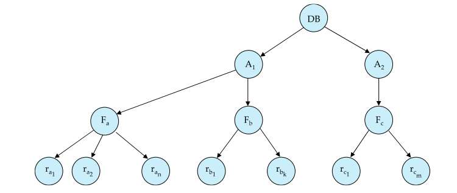
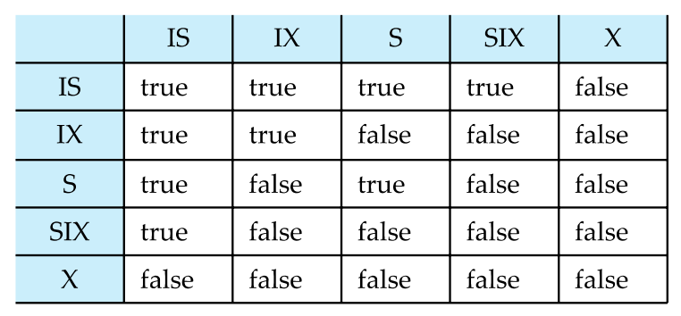

Lecture14: Concurrency Control
一、并发控制概述
并发控制（Concurrency Control）确保多个事务并发执行时不会破坏数据的一致性或完整性。其目标是保证可串行化（serializability），即并发事务的执行结果等价于某种串行执行顺序。
主要内容：
- 基于锁的协议（Lock-Based Protocols）
- 死锁处理（Deadlock Handling）
- 多粒度锁（Multiple Granularity Locking）
- 插入与删除操作及谓词读取（Insert and Delete Operations with Predicate Reads）
二、锁机制（Lock-Based Protocols）
1. 锁的基本概念
锁（Lock） 是一种控制并发访问数据项的机制，由并发控制管理器（concurrency-control manager）管理。事务通过请求和获取锁来控制对数据的访问。
1.1 锁的两种模式
- 共享锁（S-lock）：允许读取数据项，但禁止写入。通过
lock-S指令请求。 - 排他锁（X-lock）：允许读取和写入数据项。通过
lock-X指令请求。
1.2 锁兼容性矩阵
锁请求的兼容性由以下矩阵决定：
| S | X | |
|---|---|---|
| S | True | False |
| X | False | False |
- 多个事务可以同时持有同一数据项的 S-lock。
- 如果某个事务持有数据项的 X-lock，则其他事务无法持有该数据项的任何锁（S 或 X）。
- 事务只有在锁请求被授予后才能继续执行。
1.3 锁的使用示例
考虑事务 \(T_2 \)：
注意：上述锁的使用方式不能保证可串行化，因为调度可能允许产生非可串行化的交错执行。
1.4 锁协议与调度
- 锁协议（Locking Protocol）：事务在请求和释放锁时遵循的一组规则。
- 一个调度在锁协议下是合法的（legal），如果它能由遵循该协议的事务生成。
- 如果协议下所有合法调度都是可串行化的，则该协议保证可串行化。
1.5 锁表与锁管理器
- 锁管理器（Lock Manager）：一个独立进程，通过发送锁授权消息来响应加锁请求（若发生死锁，则发送要求事务回滚的消息），它还维护了内存中的锁表（Lock Table），记录：
- 已授予的锁（图中用深色矩形表示）。
- 等待中的锁请求（浅色矩形）。
- 锁类型（S 或 X）。

- 新锁请求被添加到数据项请求队列末尾，若与现有锁兼容则授予。
- 解锁请求会删除相应锁，锁管理器检查等待请求是否可以授予。
- 若事务中止，其所有锁（已授予或等待中）都会被删除。
2. 两阶段锁协议（Two-Phase Locking Protocol, 2PL）
2.1 定义
两阶段锁协议（2PL）确保冲突可串行化调度（conflict-serializable schedules），包括两个阶段：
- 增长阶段（Growing Phase）：事务可以获取锁，但不能释放锁。
- 收缩阶段（Shrinking Phase）：事务可以释放锁，但不能获取新锁。

锁点（Lock Point）：事务获取最后一个锁的时刻。事务可以按锁点顺序串行化。
2.2 变种
- 严格两阶段锁（Strict 2PL）：
- 所有排他锁（X-lock）必须持有到事务提交或中止。
- 保证可恢复性（recoverability）并避免级联回滚（cascading rollbacks）。
- 强两阶段锁（Rigorous 2PL）：
- 所有锁（S 和 X）必须持有到事务提交或中止。
- 确保事务按提交顺序串行化。
- 大多数数据库使用此变种，统称为“两阶段锁”，两阶段锁定也并非可串行化的必要条件
- 支持锁转换（Lock Conversions）的2PL：（该协议确保了可串行性）
- 增长阶段：可获取 S 或 X 锁，或将 S-lock 升级为 X-lock（升级）。
- 收缩阶段：可释放 S 或 X 锁，或将 X-lock 降级为 S-lock（降级）。
2.3 自动锁获取
锁在事务发出读写操作时自动获取：
-
读操作（read(D)）：
-
写操作（write(D)）：
所有锁在事务提交或中止后释放。
2.4 局限性
- 2PL 保证可串行化，但不能防止死锁。
- 2PL 不是可串行化的必要条件，某些可串行化调度在 2PL 下无法实现。
3. 基于图的协议（Graph-Based Protocols）
3.1 定义
基于图的协议对数据项集 \(D = \{d_1, d_2, \ldots, d_h\} \)施加偏序（partial ordering）。若 \(d_i \rightarrow d_j \)，则事务必须先锁 \(d_i \)再锁 \(d_j \)。这形成一个有向无环图（DAG），称为数据库图（database graph）。
偏序（Partially Ordered Set，简称 poset）是一个数学概念，主要应用于集合论、组合数学和计算机科学等领域。偏序描述了一种关系，这种关系在某些元素之间存在顺序，但并非所有元素都可以相互比较。
3.2 树协议（Tree Protocol）
一种特定的基于图协议，规则如下：
- 仅允许排他锁（X-lock）。
- 第一个锁可以施加在任意数据项上。
- 后续锁施加在数据项 \(Q \)上需满足 \(Q \)的父节点已被锁。
- 数据项可随时解锁。
- 数据项只能被事务锁一次，解锁后不可重新锁定。

优点：
- 保证冲突可串行化且无死锁（等待图无环）。
- 相比 2PL 允许更早解锁，提高并发性。
缺点：
- 不保证可恢复性或无级联回滚（需引入提交依赖）。
- 事务可能锁定未访问的数据项，增加锁开销和等待时间。
- 2PL 和树协议下可实现的调度互不完全重叠。
三、死锁处理（Deadlock Handling）
1. 死锁定义
死锁（Deadlock） 发生在事务集形成循环等待，每个事务等待另一个事务持有的资源。例如：

\(T_3 \)等待 \(T_4 \)释放 A，\(T_4 \)等待 \(T_3 \)释放 B，形成死锁。
解决方法：回滚一个事务（例如 \(T_3 \)或 \(T_4 \)）并释放其锁。
2. 死锁预防
通过以下策略确保系统不进入死锁状态：
- 预声明（Pre-declaration）：事务在开始前声明所有需要的锁。
- 偏序（Partial Ordering）：使用基于图的协议（如树协议）强制锁顺序。
- 等待-死亡（Wait-Die Scheme，非抢占）：
- 较老的事务可以等待较年轻的事务释放锁。
- 较年轻的事务请求较老事务持有的锁时被回滚。
- 一个事务可能多次“死亡”才能获取锁。
- 伤害-等待（Wound-Wait Scheme，抢占）：
- 较老的事务“伤害”（强制回滚）持有锁的较年轻事务。
- 较年轻的事务可以等待较老的事务。
- 相比等待-死亡，回滚次数更少。
上述两种方案中，回滚的事务以原始时间戳重启，避免饥饿（starvation）。
- 基于超时的策略（Timeout-Based Schemes）：
- 事务等待锁的时间超过指定时限后回滚。
- 实现简单，但可能在无死锁时不必要回滚。
- 难以确定合适的超时时间。
- 可能导致饥饿（事务反复回滚）。
3. 死锁检测与恢复
- 等待图（Wait-For Graph）：
- 顶点表示事务。
- 边 \(T_i \rightarrow T_j \)表示 \(T_i \)等待 \(T_j \)持有的冲突锁。
- 等待图中存在环即表示死锁。
- 系统定期运行死锁检测算法检查环。


- 死锁恢复（Deadlock Recovery）：
- 选择一个受害者（victim）事务回滚以打破死锁环。
- 选择标准：回滚成本最小（例如，进展最少或资源占用最少）。
- 回滚选项：
- 完全回滚：中止事务并重启。
- 部分回滚：仅回滚到释放所需锁的程度。
- 饥饿风险：一个事务可能反复被选为受害者。
- 解决方法：避免选择死锁集中最老的事务，确保公平性。
四、多粒度锁（Multiple Granularity Locking）
1. 概述
多粒度锁允许在不同粒度级别（例如数据库、区域、文件、记录）上锁定数据项，组织成树形层次结构(区别于树形锁定协议 tree-locking protocol )。当事务显式锁定树中的某个节点时，会隐式以相同模式锁定该节点的所有后代节点。
- 粒度级别（从最粗到最细）：数据库 → 区域 → 文件 → 记录
- 权衡：
- 细粒度（较低层次）：高并发性，高锁开销。
- 粗粒度（较高层次）：低锁开销，低并发性。

2. 意图锁模式
2.1 更多的锁
除之前提到的 S 和 X 这两种锁外，引入三种意图锁模式：
- 意图共享锁（IS, Intention-Shared）：表示在较低层次只使用共享锁。
- 意图排他锁（IX, Intention-Exclusive）：表示在较低层次使用排他锁或共享锁。
- 共享与意图排他锁（SIX, Shared and Intention-Exclusive）：子树以共享模式锁定，且较低层次有排他锁。
2.2 兼容性矩阵

3. 多粒度锁协议
事务 \(T_i \)锁定节点 \(Q \)的规则：
- 锁必须与现有锁兼容（参考兼容性矩阵）。
- 必须先锁定树根（任意模式）。
- 如果要锁定 \(Q \)为 S 或 IS 模式，需其父节点被 \(T_i \)以 IX 或 IS 模式锁定。
- 如果要锁定 \(Q \)为 X、SIX 或 IX 模式，需其父节点被 \(T_i \)以 IX 或 SIX 模式锁定。
- 锁遵循两阶段锁协议（获取所有锁前不可解锁）。
- 仅当 \(Q \)的子节点未被 \(T_i \)锁定时，\(Q \)才可解锁。
- 锁按根到叶顺序获取，按叶到根顺序释放。
锁粒度升级（Lock Granularity Escalation）：当某一级锁过多时，切换到更粗粒度的 S 或 X 锁以减少开销。
五、插入与删除操作
1. 基本锁规则
- 删除（Delete）：需在被删除数据项上获取排他锁（X-lock）。
- 插入（Insert）：插入事务自动为新元组获取排他锁。
- 检测与删除操作冲突的读/写操作。
- 防止其他事务在插入事务提交前访问新元组，或者说确保被插入的元组在插入事务提交前对其他事务不可见。
2. 幻影现象（Phantom Phenomenon）
幻影现象（幻读）指事务执行谓词读取（predicate read）（如范围查询）时，与插入、删除或更新操作发生冲突，即使未访问共同元组。
2.1 示例
- 事务 \(T_1 \)：执行谓词读取：
-
事务 \(T_2 \)：在 \(T_1 \)执行期间插入元组：
-
问题：若仅使用元组级锁，\(T_1 \)可能漏掉新插入的元组，导致非可串行化调度。
-
另一示例：\(T_1 \)和 \(T_2 \)并行查找最大 instructor ID，并插入 ID = 最大 ID + 1 的新 instructor。若无适当锁，两个事务可能插入相同 ID 的元组，违反可串行化。
| \(T_1 \) | \(T_2 \) |
|---|---|
| Read(instructor WHERE dept_name='Physics') | |
| Insert Instructor in Physics | |
| Insert Instructor in Comp. Sci. | |
| Commit | |
| Read(instructor WHERE dept_name='Comp. Sci.') |
2.2 解决幻影问题
- 基本方案：
- 为关系关联一个数据项，表示其包含的元组信息。
- 谓词读取获取该数据项的共享锁（S-lock）。
- 插入/删除/更新获取该数据项的排他锁（X-lock）。
缺点：插入/删除操作并发性低，因锁粒度较粗。
- 索引锁协议（Index Locking Protocol）：
- 要求每个关系至少有一个索引。
- 事务通过索引查找访问元组。
- 谓词读取以共享模式（S-mode）锁定访问的索引叶节点（即使无匹配元组）。
- 插入/更新/删除以排他模式（X-mode）锁定受影响的索引叶节点。
- 遵循两阶段锁(2PL)。
优点：通过检测冲突防止幻影现象。
- 下一键锁协议（Next-Key Locking Protocol）：
- 为满足索引查找的值（例如范围 \(7 \leq X \leq 16\)）加锁，读取用 S-mode，插入/删除/更新用 X-mode。
- 同时锁定索引中的下一键值（next key value），防止幻影。
- 示例（B+树叶节点：3, 5, 8, 11, 14, 18, 24, 38, 55）：
- 查询：\(7 \leq X \leq 16 \)。那么接着就会以 S-mode 锁定键 8、11、14 及下一键值 18。
- 插入 15：以 X-mode 锁定键 14、15 及下一键值 18。
- 插入 7：以 X-mode 锁定键 5、7 及下一键值 8。
优点：比索引锁协议并发性更高，仅锁定特定键而非整个叶节点。